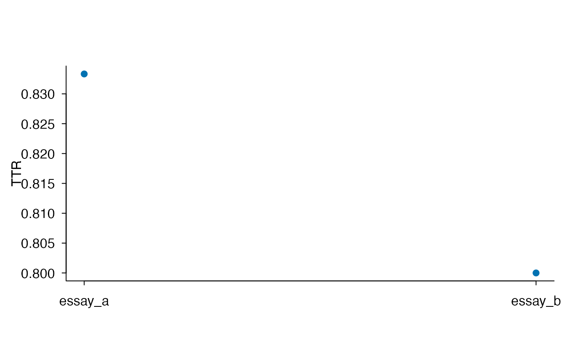

Tokenize and analyze multiple texts with explicit document IDs
lexdiv_text_batch.RdRead named texts or explicit ID/text columns into complete tokenizations, then compute lexical diversity while retaining document-local audits and preprocessing. These functions do not guess IDs or merge documents.
Usage
lexdiv_tokenize_batch(
documents, id_col = "document_id", text_col = "text",
normalization = "NFC", case = "preserve", keep_numbers = FALSE,
tokenizer = "unicode"
)
lexdiv_metrics_text_batch(
documents, id_col = "document_id", text_col = "text",
unit = "surface", word_inclusion = "all",
normalization = "NFC", case = "preserve", keep_numbers = FALSE,
tokenizer = "unicode", ...
)
# S3 method for class 'lexdiv_text_batch_results'
print(x, ...)
# S3 method for class 'lexdiv_text_batch_results'
plot(x, ..., monochrome = FALSE)Arguments
- documents
A named character vector, or a data frame with plain character ID and text columns. IDs must be non-empty, unique, valid UTF-8 strings. The metric function also accepts a plain named list of
lexdiv_tokenizationobjects, including annotated objects. Raw/prepared mixed lists are not accepted. Empty texts are valid; missing texts are errors identifying the document. An empty named vector/list or zero-row table is valid.- id_col,text_col
Names of the selected ID and text columns. Other columns are ignored; join study metadata by document ID afterwards. These arguments cannot be supplied for a prepared-tokenization list.
- normalization,case,keep_numbers,tokenizer
Settings passed to
lexdiv_tokenizefor raw input. All raw texts share these settings. The default"unicode"rules preserve existing behavior; explicitly usetokenizer = "english"for the English lexical rules. Supplying any of these arguments for a prepared-tokenization list is an error.- unit,word_inclusion
Lexical-unit and word-inclusion choices as in
lexdiv_metrics_text. Lemma/flemma/content-word analyses require the corresponding annotations on every input tokenization; raw texts do not acquire annotations automatically.- x
A
lexdiv_text_batch_resultsobject.- monochrome
One
TRUEorFALSEvalue passed to the metric plot method; specify by name. Defaults to color;TRUEuses black and distinguishes points below the advisory floor by shape unlesspchis supplied. No title is added automatically. Seelexdiv_convenience.- ...
For the metric function, named metric requests passed to
lexdiv_metrics_text, such asmetricsandwindow_length. For print and plot methods, arguments passed to the corresponding method forx$results. Plotting requires one explicit metric/specification if the table contains several.
Details
Plot defaults use a sans serif font, horizontal tick labels and an open frame.
Override these with family, las or bty in the plot
method's .... Cosmetic graphics parameters are restored after drawing.
Input order is retained. Short and zero-token documents remain in the metric table with their computability status, requested parameters, and counts. A document does not change another document's requested window or sample size. Settings and metric requests are validated even with zero documents.
Prepared objects retain their recorded settings. A batch call does not assert that differently prepared documents are comparable: inspect preprocessing and use common choices for comparisons. Tokenizer exclusions (such as English URLs and numbers) are recorded in each tokenization provenance; lexical-unit exclusions (such as missing lemmas) are recorded in the token audit. These denominators describe different stages.
The complete tokenization list can also be passed to
nj8_profile_batch. Neither tokenizer provides TUBELEX's Treebank
segmentation; its explicit mismatch policy still applies. See
vignette("english-tokenization", package = "ldfreq") for CSV and text
file input and segmentation examples.
Value
lexdiv_tokenize_batch() returns an input-ordered named list of complete
lexdiv_tokenization objects, with their token tables and provenance.
lexdiv_metrics_text_batch() returns a lexdiv_text_batch_results
list with three components:
- results
A long
lexdiv_batch_resultsdata frame withdocument_idand every core metric result column.- token_audit
The single-text token audits joined with a leading
document_idcolumn. Zero-token documents have no token rows.- preprocessing
An input-ordered named list containing every document's complete preprocessing record, including zero-token documents.
print() returns the input invisibly. plot() returns the plotted
metric rows invisibly, with the same selection rules as
plot.lexdiv_batch_results(). Use lexdiv_widen(x$results) to
create a metric table; save the complete object to retain its audits.
Examples
texts <- data.frame(
document_id = c("essay_a", "essay_b", "empty"),
text = c("The cat can't read the book.", "A reader reads a story.", "")
)
prepared <- lexdiv_tokenize_batch(texts, tokenizer = "english", case = "lower")
prepared$essay_a$tokens
#> token_index start end surface is_number
#> 1 1 1 3 the FALSE
#> 2 2 5 7 cat FALSE
#> 3 3 9 13 can't FALSE
#> 4 4 15 18 read FALSE
#> 5 5 20 22 the FALSE
#> 6 6 24 27 book FALSE
result <- lexdiv_metrics_text_batch(
prepared, metrics = c("ttr", "mattr"), window_length = 4
)
result
#> <lexdiv_text_batch_results: 3 documents; 11 audited tokens>
#> <lexdiv_batch_results: 3 documents; 6 metric records; schema 0.1.0>
#> document_id metric_id value status missing_reason N V
#> 1 essay_a ttr 0.8333333 ok <NA> 6 5
#> 2 essay_a mattr 1.0000000 ok <NA> 6 5
#> 3 essay_b ttr 0.8000000 ok <NA> 5 4
#> 4 essay_b mattr 0.8750000 ok <NA> 5 4
#> 5 empty ttr NA missing empty_input 0 0
#> 6 empty mattr NA missing empty_input 0 0
#> below_quality_floor
#> 1 FALSE
#> 2 TRUE
#> 3 FALSE
#> 4 TRUE
#> 5 TRUE
#> 6 TRUE
result$token_audit
#> document_id token_index surface selected_unit unit_match_rule upos eligible
#> 1 essay_a 1 the the <NA> <NA> TRUE
#> 2 essay_a 2 cat cat <NA> <NA> TRUE
#> 3 essay_a 3 can't can't <NA> <NA> TRUE
#> 4 essay_a 4 read read <NA> <NA> TRUE
#> 5 essay_a 5 the the <NA> <NA> TRUE
#> 6 essay_a 6 book book <NA> <NA> TRUE
#> 7 essay_b 1 a a <NA> <NA> TRUE
#> 8 essay_b 2 reader reader <NA> <NA> TRUE
#> 9 essay_b 3 reads reads <NA> <NA> TRUE
#> 10 essay_b 4 a a <NA> <NA> TRUE
#> 11 essay_b 5 story story <NA> <NA> TRUE
#> exclusion_reason
#> 1 <NA>
#> 2 <NA>
#> 3 <NA>
#> 4 <NA>
#> 5 <NA>
#> 6 <NA>
#> 7 <NA>
#> 8 <NA>
#> 9 <NA>
#> 10 <NA>
#> 11 <NA>
lexdiv_widen(result$results)
#> <lexdiv_wide_results: 3 rows; 23 columns>
#> document_id ttr__value ttr__status ttr__missing_reason ttr__method_id
#> 1 essay_a 0.8333333 ok <NA> ttr_v_over_n_v1
#> 2 essay_b 0.8000000 ok <NA> ttr_v_over_n_v1
#> 3 empty NA missing empty_input ttr_v_over_n_v1
#> ttr__below_quality_floor ttr__metric_contract_id
#> 1 FALSE ldfreq-lexical-diversity-core
#> 2 FALSE ldfreq-lexical-diversity-core
#> 3 TRUE ldfreq-lexical-diversity-core
#> ttr__metric_contract_version ttr__requested_parameters
#> 1 0.1.0
#> 2 0.1.0
#> 3 0.1.0
#> ttr__effective_parameters ttr__N ttr__V mattr__value mattr__status
#> 1 6 5 1.000 ok
#> 2 5 4 0.875 ok
#> 3 0 0 NA missing
#> mattr__missing_reason mattr__method_id mattr__below_quality_floor
#> 1 <NA> mattr_sliding_step1_v1 TRUE
#> 2 <NA> mattr_sliding_step1_v1 TRUE
#> 3 empty_input mattr_sliding_step1_v1 TRUE
#> mattr__metric_contract_id mattr__metric_contract_version
#> 1 ldfreq-lexical-diversity-core 0.1.0
#> 2 ldfreq-lexical-diversity-core 0.1.0
#> 3 ldfreq-lexical-diversity-core 0.1.0
#> mattr__requested_parameters mattr__effective_parameters mattr__N mattr__V
#> 1 4 4 6 5
#> 2 4 4 5 4
#> 3 4 0 0
nj8_profile_batch(prepared, unit = "surface")$coverage
#> document_id input_tokens eligible_tokens excluded_tokens selection_coverage
#> 1 essay_a 6 6 0 1
#> 2 essay_b 5 5 0 1
#> 3 empty 0 0 0 NA
#> matched_tokens off_list_tokens token_coverage eligible_types matched_types
#> 1 5 1 0.8333333 5 4
#> 2 4 1 0.8000000 4 3
#> 3 0 0 NA 0 0
#> off_list_types type_coverage
#> 1 1 0.80
#> 2 1 0.75
#> 3 0 NA
plot(result, metric_id = "ttr")
